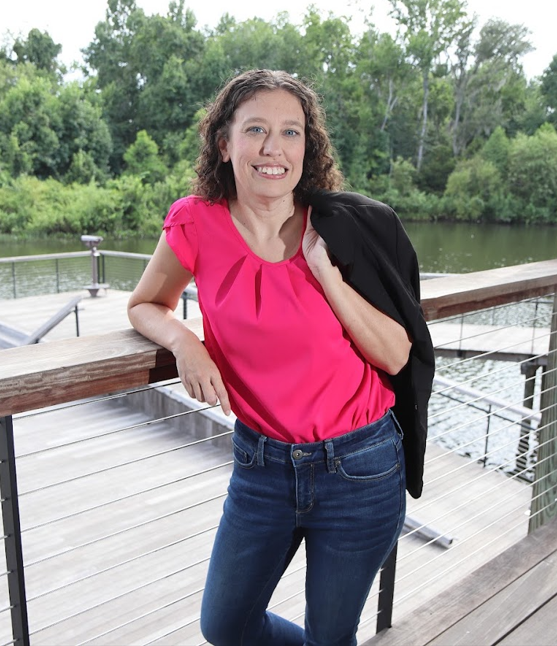

ABOUT ME
Beyond the Resume

I'm a Senior QA Analyst who enjoys solving problems, improving user experiences, and helping teams deliver reliable software. I believe the best quality comes from collaboration, curiosity, and attention to detail.
Outside of work, I enjoy spending time at the beach, traveling whenever I can, and exploring Disney parks. I also enjoy puzzles, logic problems, and figuring out how things work—which is probably one of the reasons software testing has always felt like a natural fit.
Giving back to my community has always been important to me. I previously served as Chairwoman for the American Foundation for Suicide Prevention's Out of the Darkness Walk, helping raise nearly $58,000 while leading one of the organization's most successful local events. Today, I enjoy volunteering at Give Kids The World Village, helping create meaningful experiences for children and families.
That same mindset carries into my career. By partnering with developers, business analysts, product owners, and stakeholders, I help deliver high-quality software through thoughtful testing, continuous improvement, and a strong focus on the end-user experience.
My Approach to Quality
🔍 Think Critically
I look beyond expected results to understand risks, edge cases, and real-world user behavior.
🤝 Collaborate
I work closely with developers, stakeholders, and users to create shared understanding.
📈 Improve Processes
I naturally look for opportunities to make workflows clearer, more efficient, and more reliable.